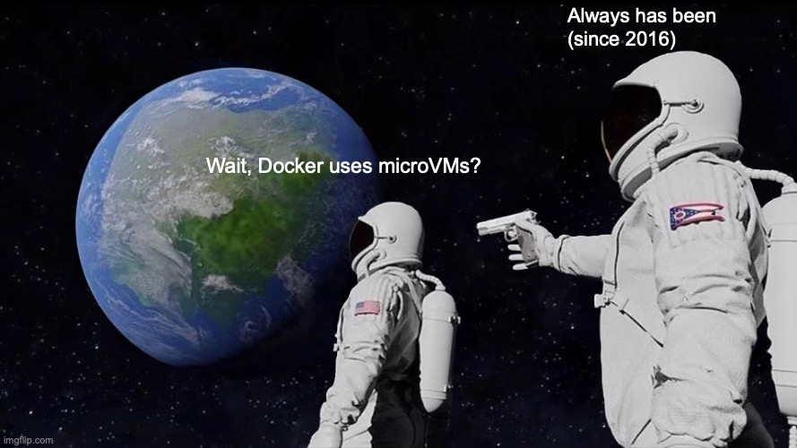

Docker has always used microVMs (well, since 2016)
There's a lot of buzz about "microVMs", where a workload runs with a stripped down Linux kernel, on a minimalist VMM such as firecracker (announced at re:Invent 2018) on top of a hypervisor like KVM or Xen. MicroVMs are often contrasted to, and considered more secure than, traditional Linux Docker containers. What if I told you that Docker Desktop has always used microVMs?

Some pre-history
Unikernels can be considered an early form of microVM. Rather than booting a full Linux kernel on a full VMM, a unikernel links an app with only the drivers, filesystems etc it actually needs; other code is omitted. For example a MirageOS unikernel app would have no processes, probably no filesystem, only one vCPU. Certainly no ssh or shell (unless you want those). The VMM that hosts the Mirage virtual devices can be similarly cut down: PV boot only, perhaps only a network interface. No legacy required. Boot can be really fast too: the "Just-In-Time Summoning of Unikernels" project (paper, code) optimized x86 VM creation time down to about 20ms (120ms on an underpowered 2015 ARM dev board)
Unikernel history can be traced back to earlier systems such as Nemesis, a "vertically integrated" operating system which was the predecessor of the Xen hypervisor, which enabled the first public clouds (i.e. AWS).
The main (obvious) downside of unikernels is having to link your app with a bunch of kernel code. A lot of people would like to run existing Linux programs!
Docker in 2015
Docker containers are an excellent way to package and run Linux software. However in 2015 the experience on
Mac and Windows machines was a little rough.
 When I joined Docker in 2015 the state of the art was
Docker Toolbox.
It used
VirtualBox, which is a great product with lots of features. VirtualBox has its own GUI and its
own update process; way more than we needed for Docker.
When I joined Docker in 2015 the state of the art was
Docker Toolbox.
It used
VirtualBox, which is a great product with lots of features. VirtualBox has its own GUI and its
own update process; way more than we needed for Docker.
A library VMM
We wanted Docker to feel like a native app on Mac and Windows, rather than a bundle of components. Using our Mirage Unikernel libraries we started building a "library VMM": a VMM which could be embedded inside the Docker application, and which would be single purpose, minimal, secure and fast. The first version was called hyperkit (a fork of xhyve, itself derived from bhyve ). We linked the C code directly with the MirageOS block layer and used the Mirage userspace TCP/IP stack in a gvisor-like network stack vpnkit. The VMM code continues to evolve and is now called Docker VMM.1
The VM kernel and root filesystem were minimal too, based on the LinuxKit project. The current version is an even more slimmed down and efficient variant but conceptually the same, similar to containerd/nerdbox.
Docker for Mac in 2015-2016
For Docker for Mac (later renamed Docker Desktop) this allowed:
- Running rootless on all platforms. Without requiring "rootless inside Linux": the whole Linux kernel is untrusted, so even a Linux CVE doesn't matter.
- Minimal devices. We could carefully limit the host / VM interface, making it easy to understand and audit.
- VPNs and network policy. It was easy to interoperate with VPNs, and to extend later to impose networking policy such as Registry Access Management.
Here's the OG 2015 Docker for Mac beta installation experience:
And now in 2026
The Docker microVM tech is the foundation of both Docker Desktop and also Docker Sandboxes (why microVMs), where each sandbox runs in a separate microVM, completely isolated from each other and the host. Docker Sandboxes enables you to do things like run your favourite coding agent and harness securely, with strict isolation and governance.

To see what Docker microVM's can do, install Docker Sandboxes (sbx) and try `sbx run claude`.
Further reading
To read more about the history of the tech, check out the article A Decade of Docker Containers (Communications of the ACM).
Footnote
1 Although we were aiming to make everything a library and link into a static unikernel-like process, for technical reasons it makes sense to still have a single host process per VM. ↩
ChangeLog
- 2026-10-03: original version
- 2026-10-04: added more history and cool install video